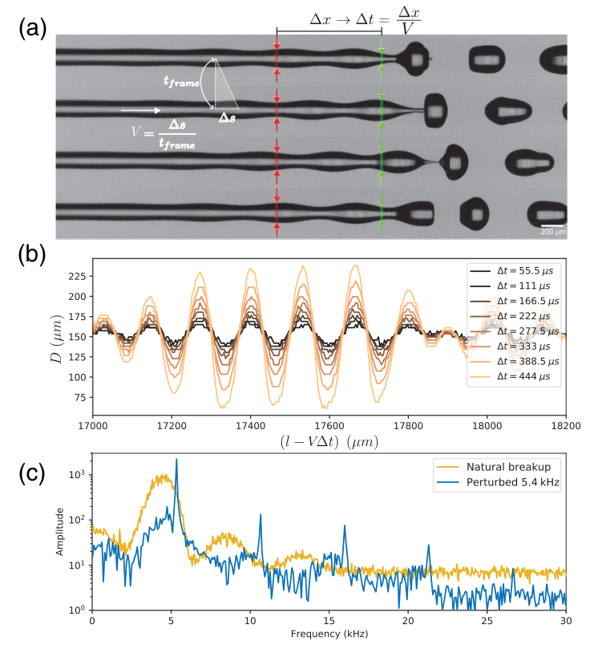

层流射流在什么位置断裂，最初的扰动从哪里来？
作者在控制外界噪声和喷嘴条件后，用热毛细波估算初始扰动，并将它与 Rayleigh 增长率结合预测断裂长度。
What Determines the Breakup Length of a Jet?
研究背景 · 问题从哪里来
液体射流断裂是 Rayleigh-Plateau 不稳定性的经典问题：射流表面的微小轴对称扰动会指数增长，最终造成断裂成滴。传统理解通常把初始扰动归因于外界振动、噪声、喷嘴缺陷、喷嘴内部流动不均匀，或者上一轮断裂产生的反馈。
作者指出这里仍有一个基础问题没有解决：自然断裂长度为什么在未主动扰动时仍然有限，而且似乎存在一个不可消除的残余扰动水平？Savart 早在 1833 年就发现隔振可以延长射流，但不能无限延长；后续工作也常观察到某种“残余扰动”，但来源不清。
本文的反转点是：作者不再把残余扰动当作实验缺陷，而把它当作热毛细波，即液体界面的热涨落。若这个想法成立，射流断裂的“自然长度”不是由某个外部噪声源决定，而是由热涨落给出的不可避免背景扰动决定。

证据等级：强。这个判断来自论文摘要、引言、实验设计、Fig. 3-5 及结论段的交叉支持。
研究方法：他们怎样排除外部噪声并测量初始扰动
1. 实验变量覆盖
作者做了 158 组独立实验，射流孔径从 4 mm 到 4 um，液体包括水-甘油、水-乙醇和 galinstan。粘度约 1-15 mPa s，表面张力约 22-72 mN/m，galinstan 的表面张力约 718 mN/m，密度也随液体体系改变。流量通过图像分析、压力传感器或收集称重确定。湍流射流被排除，因为湍流会快速缩短射流长度，属于另一类机制。
作者刻意没有把实验做成极端隔振环境；大多数实验只在光学平台上进行，没有特别隔离泵和高速相机风扇。随后他们也做了更强的隔音/隔振测试，包括隔离 plexiglass chamber、外部 HPLC 泵、真空环境和长细软管连接喷嘴，但仍然没有观察到断裂长度明显增加。
2. 图 2：喷嘴几何是控制变量，不是主结果图
Fig. 2 展示五类喷嘴：粗糙内壁的不锈钢平口针、光滑玻璃毛细管、平板喷孔、光滑锥形不锈钢喷嘴，以及带流动整直器的电火花加工喷孔。
这张图回答的问题是：作者是否真的覆盖了不同喷嘴形状、粗糙度和入口流动条件？它支撑的结论是：只要射流保持层流，喷嘴质量、形状和粗糙度并不会显著改变自然断裂长度。因此它是“排除喷嘴缺陷假说”的实验设计图。
读图注意点：Fig. 2 不是在直接展示断裂长度，而是在说明实验控制变量足够宽；它的证据力来自与后文 Fig. 5 的多喷嘴数据一起看。
3. 图 1：主动扰动和自然断裂的现象对照
Fig. 1 比较了未扰动射流和用浸没式压电换能器主动扰动的射流。主动扰动后，液滴更单分散，断裂长度显著缩短；未扰动射流则表现出自然、不规则断裂。
这张图回答的问题是：初始扰动幅值是否真的会改变断裂长度？答案是会。它为后面使用 Rayleigh 线性理论建立 L_k = V/Omega_k * ln(R/delta_k) 提供直观证据：扰动越大，达到断裂所需的指数增长时间越短，因此断裂长度越短。
读图注意点：Fig. 1 不能单独证明热毛细波，只能证明“可控扰动会缩短射流”，以及断裂长度确实对初始扰动敏感。
4. Rayleigh 理论框架
作者使用 Rayleigh 线性化扰动理论描述射流半径：
R(z,t) = R + delta_k cos(kz) exp(Omega_k t)
对固定速度 V 的射流，扰动增长到 O(R) 时发生断裂，因此：
L_k = V T_k = (V / Omega_k) ln(R / delta_k)
这个式子给出核心物理含义：断裂长度是初始扰动幅值 delta_k 的对数测量。因为是对数依赖，外界噪声变小并不会线性地无限延长断裂长度，这也解释了为什么残余扰动源难以从普通实验中分辨。
5. 图 3：从高速图像提取自然波动谱
Fig. 3 使用高速成像追踪 R = 75 um 水射流的表面起伏。Fig. 3(a) 给出连续帧和图像分析位置；Fig. 3(b) 展示校正平移后的射流宽度 D 随空间位置的演化；Fig. 3(c) 比较自然断裂和 5.4 kHz 外部扰动下的频谱。
这张图回答的问题是：自然断裂的波动是规则外部驱动，还是宽频随机扰动？结果显示，主动扰动时频谱有尖锐、规则间隔的峰；自然断裂时频谱更平滑、更宽，并且集中在 Rayleigh 频率附近。这支持“随机/噪声型初始扰动”假设。
它还排除了一个替代机制：如果断裂点的 pinch-off 反馈向上游传播并触发下一次断裂，那么波形应在分析中表现出额外变化；作者没有观察到这种特征。只有非常低速度、接近 dripping-to-jetting 转变时会出现明显反向毛细波，这不属于本文处理的层流射流范围。
读图注意点：Fig. 3 的关键不是某个峰值，而是自然频谱和强迫频谱的形状差异；它证明“自然扰动像随机噪声”，但热噪声这一点还需要 Fig. 4 和理论估算进一步锁定。
具体结果：热毛细波如何成为定量解释
1. 排除断裂反馈机制
作者测试了“上一轮断裂反过来扰动喷嘴/射流”的可能性：让射流落入液池并快速降低液池位置，如果断裂反馈是主因，改变断裂点与喷嘴距离应导致射流长度暂时增长、缩短或振荡。但作者没有观察到断裂长度的增加或减少，即使在液池中放入超声换能器主动从下方扰动也一样。
这说明自然断裂更可能来自喷嘴附近或射流表面本身的本征扰动，而不是断裂事件的自反馈。
2. 图 4：把可见扰动反推到喷嘴处，得到埃量级初始扰动
Fig. 4(a) 对 Fig. 3 类似数据中的射流厚度调制做指数增长拟合，并把曲线外推到 t = 0，即喷嘴出口附近。拟合曲线在纵轴截距处对应 delta_0 约 1 Å。
Fig. 4(b) 改变压电换能器电压，观察由拟合得到的 ln(R/delta) 随电压变化。外部扰动电压减小时，射流长度连续回到未扰动长度，没有出现“必须超过某个外部扰动阈值才断裂”的平台。这说明不可去除的自然扰动 delta_0 极小，原始水平在 Å 量级；相比之下，压电换能器施加的是纳米量级扰动。
这张图支撑的结论是：自然断裂对应的初始扰动幅值非常小，小到与热毛细波/热表面粗糙度的尺度一致。它是全文从“随机扰动”推进到“热涨落扰动”的关键实验图。
读图注意点：作者也承认外推法不精确，因为实验可见尺度与 Å 量级之间跨度很大；因此 Fig. 4 不是单独定论，而是和热毛细波理论及 Fig. 5 的无拟合预测共同构成证据链。
3. 热毛细波模型
作者把自然扰动 delta_0 看成 Rayleigh 波长处热毛细模式的有效平均振幅。由能量均分思想，液体圆柱表面热毛细波谱可估算为：
delta_eff(k) = R * sqrt( k_B T / [gamma A |(kR)^2 - 1|] )
为了得到局域最大扰动，他们取主导断裂的最小局域面积 A_min，尺度约为 Rayleigh 波长对应的表面积。代入 Rayleigh 共振条件后得到：
delta_0 = sqrt( k_B T / [sqrt(8 pi^2) gamma] )
对水，gamma = 73 mN/m，T 约 300 K，估算 delta_0 约 0.5 Å，和 Fig. 4 外推得到的 1 Å 同量级。
最后把热扰动幅值代入自然断裂长度关系，得到无拟合参数的预测式：
L/D = 1/2 ln( pi^2 gamma D^2 / sqrt(2 k_B T) ) * We^(1/2) * (1 + 3Z)
其中 We = rho D V^2 / gamma，Z 为 Ohnesorge 数。多数情况下 Z 很小，Rayleigh 波长近似为 lambda_R ≈ sqrt(2) pi D。
读公式注意点：温度 T 的影响在对数因子里，因此普通水体系的可达温度范围很难明显验证 T 依赖；这也是作者承认的实验限制之一。
4. 图 5：无拟合参数模型的总验证
Fig. 5 把实测断裂长度 L_break 与 Eq. (7) 预测值作对比，覆盖不同喷嘴几何、液体速度、流体性质和喷嘴直径，并加入文献中的纳米射流 MD 结果。数据大体沿对角线分布。
这张图回答全文最重要的问题：热扰动模型是否只是解释个别实验，还是能跨尺度预测断裂长度？作者报告该无拟合参数预测的 mean squared relative residual 为 0.04；若改用常数对数因子拟合，则为 0.06。因此热毛细波模型不仅物理上合理，而且定量上优于一个更经验化的常数因子拟合。
它支撑的结论是：从纳米射流到宏观射流，断裂长度可以由热毛细波初始扰动与 Rayleigh 增长共同解释，跨度超过 7 个数量级；仅实验数据本身则覆盖约 4 个数量级的射流长度。
读图注意点：Fig. 5 的横轴不是单一的 We 或 D，而是 Eq. (7) 给出的组合预测量；不同颜色/符号代表不同喷嘴和液体条件。它的强证据来自跨变量坍缩到一条近似对角线，而不是某一类喷嘴数据。
关键机制总结
- 射流表面任意小的轴对称扰动都会被 Rayleigh-Plateau 不稳定性指数放大。
- 断裂长度与初始扰动幅值呈对数关系，所以非常小的背景扰动也能设定有限自然断裂长度。
- 外界主动扰动会显著缩短断裂长度，但把外界噪声降低到一定程度后，断裂长度不再继续显著增加。
- 不同喷嘴几何和粗糙度在层流条件下不显著改变自然断裂长度。
- 自然射流的波动频谱宽而集中于 Rayleigh 频率附近，符合随机初始扰动。
- 可见扰动指数外推到喷嘴处得到 Å 量级初始扰动，与热毛细波估算一致。
- 热毛细波模型无拟合参数预测了宏观实验和纳米模拟的断裂长度。
适用范围与局限
- 本文结论适用于层流射流；湍流会快速缩短射流长度，作者明确排除了湍流射流。
- 接近 dripping-to-jetting 转变的低速情形可能出现反向传播毛细波，作者认为这是不同机制，不在本文范围内。
- 对 delta_0 的直接实验外推跨越可见尺度到 Å 尺度，作者承认不精确；可信度来自多证据一致，而不是单一测量。
- 温度依赖难以在普通水体系中直接验证，因为 T 只进入对数因子，且液体表面张力也会随温度/液体种类变化。
- 数据未公开，只能向作者合理请求获取；复现实验细节需要额外原始数据。